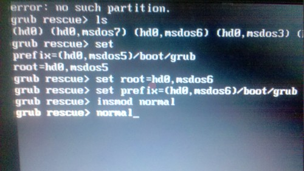

在windows下面删除了一个分区。原以为应该对Ubuntu没什么影响的。不曾想，重启之后出现了grub错误。
启动界面下显示：
error: no such partition
grub rescue>
此时，输入ls命令，列出所有磁盘分区。
然后输入set命令查看现有的设定。发现分区的序号变更了，现有设定和磁盘分区不匹配。
grub rescue>ls
(hd0) (hd0,msdos7) (hd0,msdos6) (hd0,msdos3) ....
grub rescue>set
prefix=(hd0,msdos5)/boot/grub
root=hd0,msdos5
仔细对照发现，ls的结果中根本没有(hd0,msdos5)，怀疑是删除分区时分区序号变更了。
再次查看ls的列表，里面有msdos6和msdos3，没有msdos4。因为只删除了一个分区，因此猜测分区变成了msdos6。
尝试输入：
grub rescue>set root=hd0,msdos6
grub rescue>set prefix=(hd0,msdos6)/boot/grub
grub rescue>insmod normal
此时，如果尝试成功，则命令行提示符会变色。原本的提示符是灰色的，成功之后会变成纯白色。
再次输入：
grub rescue>normal
既可以进入熟悉的grub启动画面了。
